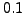
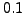

Next: Output
Up: How COMBINE Works
Previous: Equivalent sig
Contents
Reliability and sensitivity
A linear combination is only accepted if the equivalent sig of the combination is high enough compared to the significance of the given peak according to
where  is the sensitivity, which can be adjusted by means of the keyword sens in the file <infile>.ini. The keyword is followed by a floating-point number, and the default value is . If all examined linear combinations have a reliability below , the examined signal component is considered genuine. Hence the sensitivity provided by the keyword sens permits to directly adjust the number of genuine components in a list of frequencies.
is the sensitivity, which can be adjusted by means of the keyword sens in the file <infile>.ini. The keyword is followed by a floating-point number, and the default value is . If all examined linear combinations have a reliability below , the examined signal component is considered genuine. Hence the sensitivity provided by the keyword sens permits to directly adjust the number of genuine components in a list of frequencies.
The ratio of sigs,  , is called the reliability of a linear combination and part of the COMBINE output. If multiple combinations are available, the reliability is used to decide which one to pick. This means, COMBINE picks the combination with the highest reliability.
, is called the reliability of a linear combination and part of the COMBINE output. If multiple combinations are available, the reliability is used to decide which one to pick. This means, COMBINE picks the combination with the highest reliability.
Piet Reegen
2009-09-23